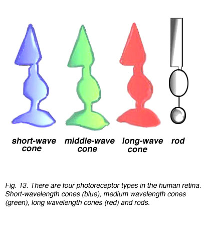
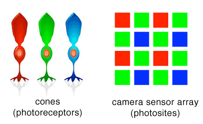

RGB Values
RGB values range from 0 - 255. However, now there are three values per pixel rather than just one: red, green and blue. Each pixel can have any combination of red, green and blue within this range, producing the spectrum of colors below.
RGB is additive color, menaing that the sum of all colors at full intensity is white (255, 255, 255). Absence of color is black (0, 0, 0).
Play with the sliders below to make your own RGB colors!
1. Make a light color
2. Make 3 different shades of grey
3. Make a dark color
Why use RGB?: RGB and the Human Visual System
The human eye has light receptor cells (called cones) specialized for recieving red, green and blue color stimuli. Every color that we see can be expressed as some combination of these three colors. White light is the full strength combinaton of all three (255, 255, 255). [Tanimoto] 
"The choice of primary colors is related to the physiology of the human eye; good primaries are stimuli that maximize the difference between the responses of the cone cells of the human retina to light of different wavelengths, and that thereby make a large color triangle.[3]"-- wikipedia. Light is additive, meaning that pure white light is the sum of light of all the different hues.
Just like cones, a camera sensor also includes red, blue and green-specific sensors. Each type of sensor records a specific wavelength range of the incoming light.
